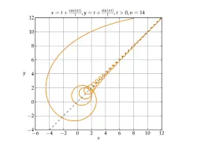
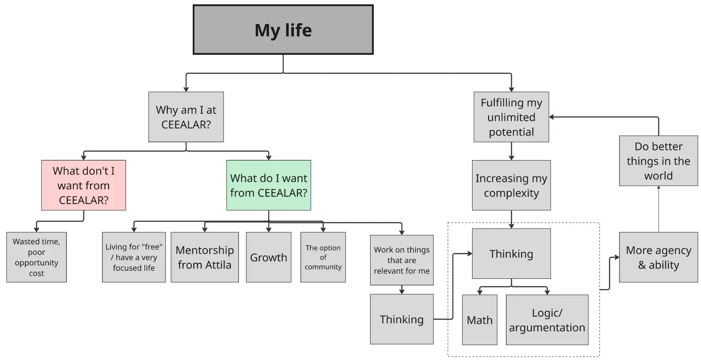
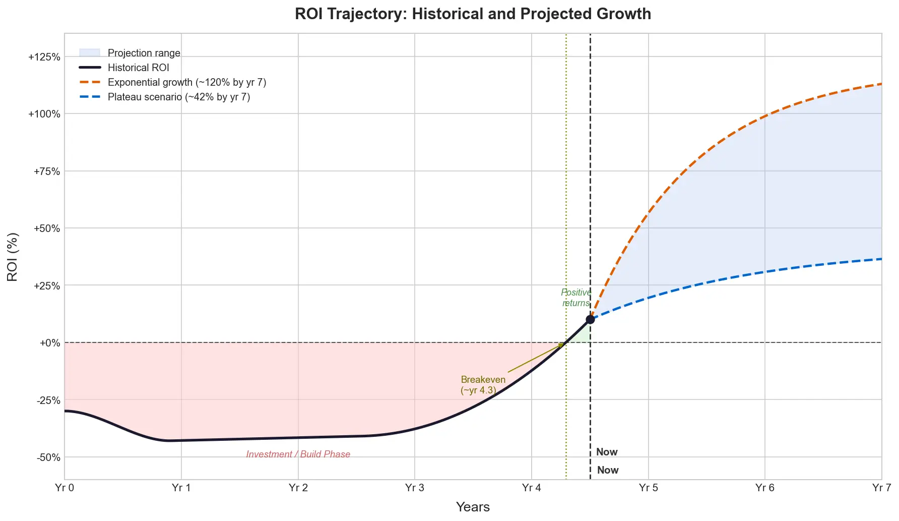

Note that I now see this as a foolish thing! Built on bad philosophy, of course. Have explored more in my private obsidian space.
I feel like I’ve had a few really quite seismic internal shifts recently and I want to explore them here.
What has changed for me?
I → The path of growth that I’ve been on
I’ve been working on “improving myself” for a decade
- As you know, I’ve been thinking about improving my thinking.
- This has actually been a key thread for me since I was 19 and first came aware to how “broken” I was. Super socially anxious, etc. So I worked on “improving myself”. And of course, it took a long time to converge on useful stuff, and for a while it might have even been counterproductive, but you know — you just have to do the thing with the level of wisdom you have at the time, etc.
Asymptote
- One thing I’m really liking at the moment is the idea of being an asymptote, which works really well with your “you have unlimited potential” thing. (A few days ago I had a eureka moment of “what if that’s a great goal to have, the somewhat paradoxical/ironic aim to ‘fulfil my unlimited potential’?“)
- And I like this visual of an asymptotic spiral for that (gradient descent also works). At first, I was very far away, a huge amount of technical debt, really lost in the woods. And gradually, I explored, plausibly going in the wrong way for a long time, but gradually, over years, I got closer to something, and now I’m the most internally aligned I’ve ever been, the most clear, the most wise.

- And of course, I’ll keep going, keep realising how foolish I was, etc. Ooh, actually Jed McKenna speaks to this! Here:
If you’re not amazed by how naïve you were yesterday, you’re standing still.
If you’re not terrified of the next step, your eyes are closed.
If you’re standing still and your eyes are closed, then you’re only dreaming that you’re awake.
A caged bird in a boundless sky.
Jed McKenna
- Another Jed except:
“Ah, good question. No. This isn’t about personal awareness or self-exploration. It’s not about feelings or insights. It’s not about personal or spiritual evolution. This is about what you know for sure, about what you are sure you know is true, about what you are that is true. With this process you tear away layer after layer of untruth masquerading as truth. Anytime you go back to read something you wrote, even if it was only yesterday, you should be surprised by how far you’ve come since then. It’s actually a painful and vicious process, somewhat akin to self-mutilation. It creates wounds that will never heal and burns bridges that can never be rebuilt and the only real reason to do it is because you can no longer stand not to.”
(I haven’t yet reached the point that Jed talks about and calls “Spiritual Autolysis”, which seems to be the same as “neti, neti”, where he says that you end up compelled to cut through all the bullshit layers of yourself until you finally “arrive” at the Awake state (which is what remains when all the conceptual bullshit is gone))
Progress within the spiral
- And from the outside, I’ve looked foolish often. I’ve pivoted a bunch. But with every pivot (at least, this is how it feels from the inside) I’ve gotten closer to the real thing. My pivots are less large, and there’s coherence, a through-line.
- I like this Nietzche quote for pointing at this, how with enough experience, you get better at triangulating what matters to you
This, however, is the means to plan the most important inquiry. Let the youthful soul look back on life with the question: what have you truly loved up to now, what has elevated your soul, what has mastered it and at the same time delighted it? Place these venerated objects before you in a row, and perhaps they will yield for you, through their nature and their sequence, a law, the fundamental law of your true self. Compare these objects, see how one complements, expands, surpasses, transfigures another, how they form a stepladder upon which you have climbed up to yourself as you are now; for your true nature lies, not hidden deep within you, but immeasurably high above you, or at least above that which you normally take to be yourself.
- (I did a “personal first principles” exploration recently, with one useful prompt being “what has remained, despite all my pivots”, for example)
I’ve made genuine and profound progress
- You know me, I don’t think I need to hit this point too much. But my growth over these ten years has been kind of astounding
- Here’s Ethan Alley, the CEO at Alvea, the biotech startup I worked for, writing in 2023:
I think this level of autonomy was made possible by what I might call his “metacognitive emphasis”- he spends a lot of effort and consideration thinking about how to improve and get better at reasoning about aspects of his own thinking and process beyond the object level. For instance, he’s very intentional about his own productivity and figuring out his personal failure modes. Because of this, he’s someone I expect to see growing — by redefining himself and his capabilities— more frequently than others.
(For the full reference, see here, and for more references, see here)
- It’s 3 years later, and I have made incredible progress since then (as Ethan predicted). Kensho/stream entry, a huge increase in self-esteem (thanks in part to you!), and now, all the stuff that has been clicking into place recently.
II → Recent shifts
1. Subject-to-object re: bad thinking
- Weirdly, over the years, I’ve installed better “meta-cognition”, e.g. massively improving my ability to learn things, whilst always lacking the ability to think well, for myself
- And it’s only recently (in the last perhaps 2 months) when this thing of “oh god, I’m a bad thinker, I need to get better at thinking” has clicked into place. Perhaps initiated by a final pivot, a straw-that-broke-the-camel’s-back thing of “oh god, clearly I am hugely lacking in internal clarity”, or whatever
- So, as you know, I briefly considered going to a proper university like Oxford to get a proper education. I’ve explored my lack of education, e.g.
- And we’ve talked about this, and you’ve given me a simple curriculum
- And even though I haven’t actually written the argumentative essay yet, just foregrounding this, just thinking about my bad thinking, seems to have initiated the thing that Kegan calls a “subject-to-object” shift, where you go from being subject to something, swimming in it like water without noticing that it is there, to being able to step back and see it as an object. So, a month ago, I was bad at thinking, and couldn’t really see how, and now, I can see bad thinking. I keep seeing people thinking badly, making ridiculous claims, saying things that aren’t logical and don’t survive scrutiny, etc
- This is an enormous thing. I’ll keep going down this path, writing the argumentative essay, learning the basics of logic, etc. But really, it does feel like I’ve just gone from 0-to-1, the hardest part, and now this will take care of itself, or at least, now it’s kinda guaranteed to happen
2. Subject-to-object re: porosity & overwhelm
- A similar shift that just occurred: I called last weekend a “clarity weekend”, mapped out all the stuff that I claim I’m gonna do, shifted a bunch of friends from whatsapp to email, mapped all my open loops, and had the insight of: “I am overwhelmed, and I have been overwhelmed for ages. I am failing to manage myself by being too porous. I say ‘yes’ to far too many things, from the mistaken belief that I ‘have nothing but time’, that I have abundant free time, no responsibilities, etc”.
- I’ve gone from being subject to my overwhelm and lack of personal management, to being able to see that overwhelm and lack of boundaries and poor personal management as an object, and being able to take steps to remedy the situation, as a result of my clearer vision, my new vantage point.
- I am in a new era (micro-era?), where I have declared overwhelm, task bankruptcy, and am now saying no to things by default. “I’m currently at capacity, so no. Maybe I’ll be able to get to it, but probably not, sorry!“.
- This is a huge, seismic shift. It feels like learning boundaries for the first time. In the past, I’ve always felt guilty about saying “no”, and I think as a result, I’ve done something like always said “maybe” when I should have said no.
- It feels wildly adult to say firm “no”s to things. I’m absolutely loving it. I’m really, really giddy/shocked about how much free time I currently have. It’s making me realise that it felt like in the past, my time was never my own. Like somebody might force me to do something at any time (downstream of growing up with a needy mother who I couldn’t say “no” to without hurting her).
III → how my life shifts as a result
- So I can now:
- See my own “bad” thinking, which allows me to improve it
- Say “no” to things, freeing up an enormous amount of time and energy
- It seems that these two things together, now that I have them, radically shift my internal landscape
- My old self-concept was something like:
- “Just a simple dude who is happy to be here and happy to help in whatever way he can”. Enneagram 3, really likes to work and be useful, no strong preferences, no real goals or plans, just happy to be here, and things are going well.
- And now, it’s something like:
- “Person with unlimited potential. 10 years of growth, and it seems to be speeding up. Can now see his own bad thinking, and is ready to start thinking properly, for the first time. Has high ambition. Goal of ‘fulfil my unlimited potential’. Perhaps will become a millionaire, a billionaire?”
- And this is what you’ve been nudging me towards this whole time. You’ve been the one who has been pointing me towards this.
IV → what comes next?
Examining the reasons for being at CEEALAR
- E.g., [volunteer] recently: “there’s nowhere on earth that would be better for me than right here” → dude, what an insane claim! I felt the same, unreflective, “this plan is the best plan”. But actually, no. It’s pretty unlikely that this is the best place for me to be, right? It’s worth investigating, at the very least
- We discussed terms of me volunteering at CEEALAR, maybe 5 months ago, back when I was very much in my “I have no preferences, I just wanna help out, sure I can help out full time, I don’t believe in opportunity cost, I’m just excited to be useful” thing. But as I’ve grown, and experienced my competing priorities, the lack of adequate incentives to make this place a full-time focus leading to me dropping balls and being dissatisfied and far less useful than I would like, etc, the calculus has shifted a lot. And now I want to soberly look at this, be boundaried, and figure out what I actually want to do.
Improving my technical knowledge
- If I take the “I have unlimited potential” thing seriously (and I do, thanks in large part to you!), then a question is: “ok, what is currently holding me back?”
- And IMO, one thing is my lack of education. I’ve explored this in Poor education, and my decade of tanha, 2026-02-19, but basically, I stopped learning maths at around 15, my degree was bullshit, I did not get a technical education. I think the internal operations jobs I’ve had are basically jobs for people who are intelligent but untrained. “We don’t want the actually trained, technical people doing the mundane running-the-operations stuff, so we’ll get intelligent and untrained people who are a good culture fit, give them a wage and a title that sounds good, and they’ll be happy and useful, in their limited way”
- For a long time, I thought that math was just bullshit anyway, not useful, too dry, etc. But after talking with Claude, I had the shocking realisation that math is the formal language of abstraction, and I think in abstractions all the time, just sloppily.
- Claude:
Correct. Learning to think in formal abstractions — math, logic, programming — is one of the most reliable ways to move up in hierarchical complexity. It forces you to hold nested structures in your head, operate on abstractions of abstractions, and distinguish between levels of analysis. Most people never do this because it’s genuinely uncomfortable and the payoff is delayed by months or years.
So the more precise claim is: math is the language of formal, rigorous abstraction — the kind where you need precision, logical entailment, and the ability to build vertically, with each layer resting necessarily on the one below. For that kind of thinking, there is no alternative. It’s not that math is one good option among several. It’s the only one.
For your purposes — someone trying to increase their hierarchical complexity of thought and break through professional ceilings — that distinction barely matters. The formal kind is exactly the kind you're missing, and it’s the kind with the highest transfer to technical domains, strategic reasoning, and systems thinking. The informal kinds of abstraction you probably already have in reasonable supply from lived experience and verbal intelligence.
- I’m now thinking that math is the thing that I’ve been missing this whole time. I’ve got a lot of verbal intelligence, and I engage in abstractions, but I lack the math training to be a rigourous thinker. I wonder what 6 months, 1 year of MathAcademy.com could do to me.
Appendix, messy
Alternatives, ideas
- Become a grantee and work full-time on increasing my “Model of Hierarchical Complexity” level, via learning math, and then potentially software engineering
- Apply for full-time autodidact funding. “Fund me for a year to fill in the gaps in my knowledge that have held me back”
- Partner with [dating prospect] and set up a retreat business (fanciful, probably a bad idea, but just spitballing)
- Moving back in with my mum (god no)
- Having more strict, restricted hours here, and a much more clear scope. Rather than the naive “I have nothing but time!” leading to taking on too much, having competing priorities, and dropping balls. E.g., I’ve cancelled my 09:20 standups because I’ve been getting up at 7am and working on my own stuff. Whereas I don’t expect that paid members of the team are conflicted in this way, via working on other things that feel like they could compound for them, so they’re actually more compelled by the other things: they receive a FTE wage for here, so they work for here. For a while, maybe the first 1-3 months, I had intrinsic “FTE wage” motivation/energy for CEEALAR, but that is no longer the case.
- Other things that I haven’t thought of yet.
CEEALAR reflections
- Lack of incentives. When I was more dumb, didn’t mind, “there’s nothing else I’d rather do!“. Now, I feel much more aware of opportunity costs. A genuine feeling of “I can’t give this full-time focus, and that means I’m dropping balls constantly, constantly dissatisfied”. Feels more important to work on the stuff that compounds (stuff that increases my MHC level, filling in my lack of technical knowledge/training), rather than helping with CEEALAR. (Having more explicitly bounded hours could be a thing)
- Same with how I said to [interior designer] that I’d help her get funding. Sure, it’d be awesome to help her get funding, but I can’t. It makes no sense for me, I don’t have time, I can’t split my focus. I need to work on myself.
- I’d love to full-time help [staff member] with funding, with the theory of change, with improving our pitch to Coefficient Giving. But it doesn’t necessarily make sense for me to do this
- Compounding, capacity/capability-building stuff, like learning math, or to think better, or entrepreneurship, or whatever. MHC-boosting stuff. “Will this help me become a millionaire, a billionaire”
- Perhaps there’s a much more boundaried version of working at CEEALAR where I’m much more clear about the role I want, the kind of work I want to do. Only work that is relevant to my path, that is, maybe only thinking-work. Only stuff that involves improving our thinking. Knowledge management, red-teaming, etc

“You have unlimited potential”
- This is probably the most impactful thing Attila has given me. And it has of course taken a while to sink in, and hasn’t fully sunk in yet. But it has been gradually shifting things within me
- I had the insight a few days ago that saying “you have unlimited potential” is equivalent to saying “you could make millions of pounds. Hundreds of millions of pounds, billions”.
Excerpts from my writing where I came across this insight:
“I’m sure that once you’ve built the cognitive machinery needed to make millions of pounds, you could scale that up to billions. “The hardest is the first £1,00,000”, truly, this is legitimately true. It’s the 0-to-1 thing, literally.”
“I could make billions of pounds” as the kind of like, most profound insight. Well, really it’s the “you have unlimited potential”, but the “billions of pounds” makes it concrete, non-metaphorical. Not invoking unlimited and also potential, two kind of empty concepts, at least somatically. By definition, abstract, not-point-to-able. You can parse the signifier but there’s no clear reference, so the idea is not particularly memetically fit.
Whereas the statement “I could make billions of pounds” is very concrete. It immediately conjures many things. The feeling of abundance. The feeling of wealth. Mark Zuckerberg, Elon Musk. A feeling of power and importance.
- Attila saying that, when he say my CV, he was like “why on earth do you want to be a volunteer here”.
- Attila: “you have unlimited potential”. The more I’ve marinated in that, the more I’ve thought about the ways that I’m ruled more by my old self-concept of “just some dude who wants to be helpful”. And as I’ve grown over the last 6 months, including improving my thinking and ability to look at my own thinking, you know… I’m not that guy anymore. When I was naive and “just happy to be here”, vs now when I’m leaning into “I have unlimited potential”
Biggest requests
- One request would be: “let me live here and go deep full time on this stuff”. The more I can focus, and the fewer things I have to focus on, the better. 3 months, 6 months, a year of educating myself, as if I’m at Oxford university, but I’m actually doing a much more practical thing. With the (currently vague) aim of “increase my level of complexity, increase my agency”. I could be a CEO, I could be a founder, I could be an amazing software engineer, I could be anything. My bottleneck IMO is technical skill.
Double appendix
Negative to positive ROI example
- E.g., re: going in the wrong direction: I had Claude make this visual for me yesterday, re: my learning about “knowledge management software” when I was ~21, how for a long time it was almost certainly actually negative ROI, me naively believing youtubers who said that you need a knowledge management solution like Obsidian, how masses of uneducated people take these people at face value (lacking the cognitive machinery to assess if the solution of “knowledge management tool” solves an actual genuine bottleneck in their life). But now, at 29, it has finally become a positive ROI. It empowered me to write an enormous amount on this site. I could imagine being someone who is “scared of Obsidian”, rather than totally empowered to use it.
